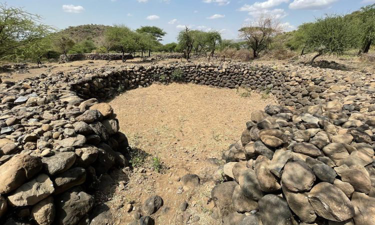

Kielelezo namba 10: Bwawa lililojengewa ukingo wa mawe
Maji yaliyohifadhiwa katika bwawa yalitumika kwa umwagiliaji kipindi cha ukame. Watu hawakuruhusiwa kutumia maji haya wakati wa mvua. Hii ilisaidia jamii kupata mazao muda wote. Sayansi na teknolojia hii ilifanyika maeneo ya Engaruka, Kaskazini mwa Tanzania katika jamii za Wairaqw. Pia, jamii ya Wasonjo ilitumia sayansi na teknolojia hii.
Pia, baadhi ya jamii zilifanya umwagiliaji kwa kutumia mifereji asilia ya kuchimba. Mifereji hii ilitoka katika vyanzo vya maji, hasa katika maporomoko ya maji na milima na kutiririsha maji hadi maeneo ya mashamba. Jamii zilizotumia teknolojia hii ni Wapare na Wachaga.
Kilimo asilia kwa kutumia matuta
Maeneo yenye miinuko na mmomonyoko wa udongo, watu walilima kwa kutumia matuta ya kukingama. Jamii kama vile Wamatengo walitumia kilimo cha “ngoro”. Kilimo hiki kilifanyika katika maeneo yenye mteremko ili kuzuia mmonyoko wa udongo na kuiweka ardhi katika hali ya unyevunyevu. Kilimo cha ngoro kilifanyika kwa kutandika nyasi katikati kwa umbo la mstatili,